Photography
Palaces, lakes, gates and quiet everyday corners of Bundi and beyond — in colour and black & white.
- Category
- Photography
- Year
- 2025
- Tools
- Lightroom, Photoshop
- Skills
- Travel, Street, Architecture, B&W

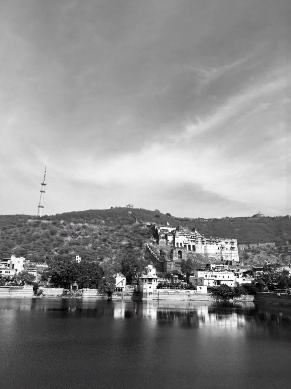
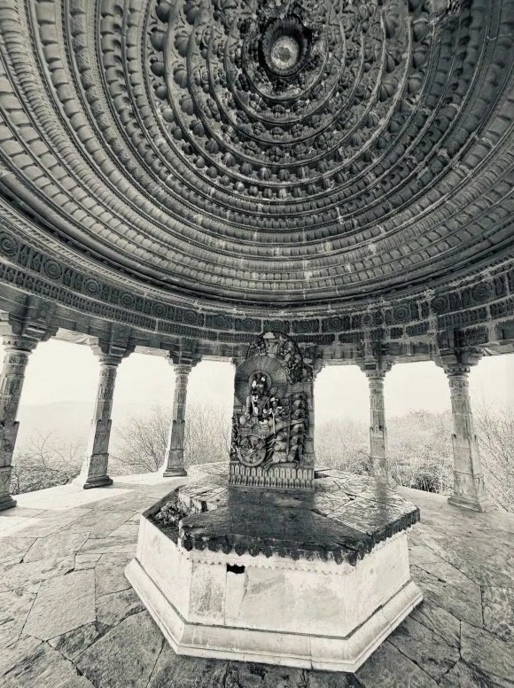
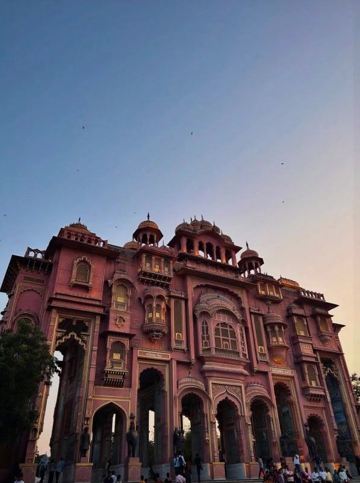
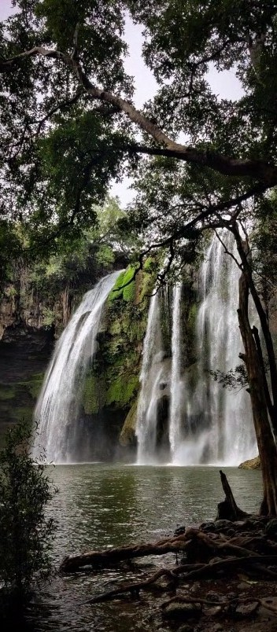
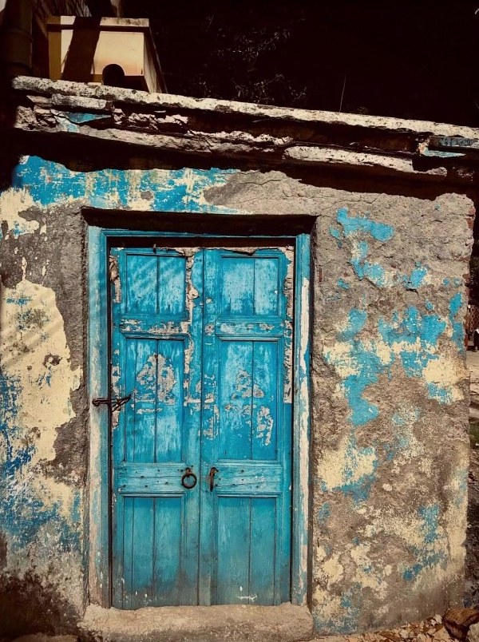
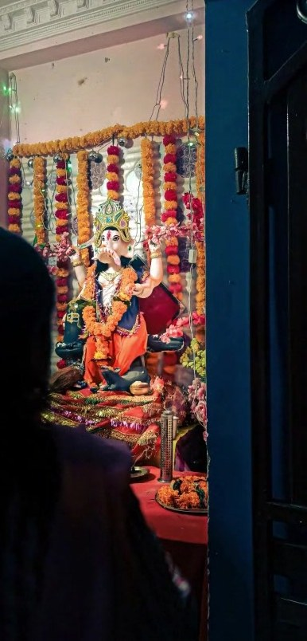
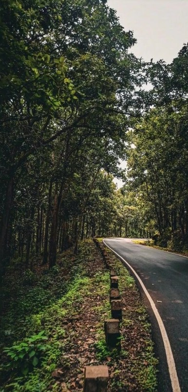
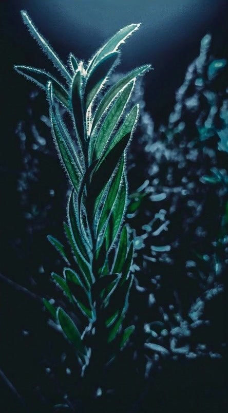
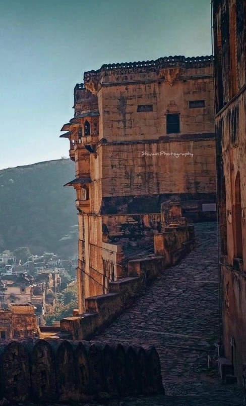
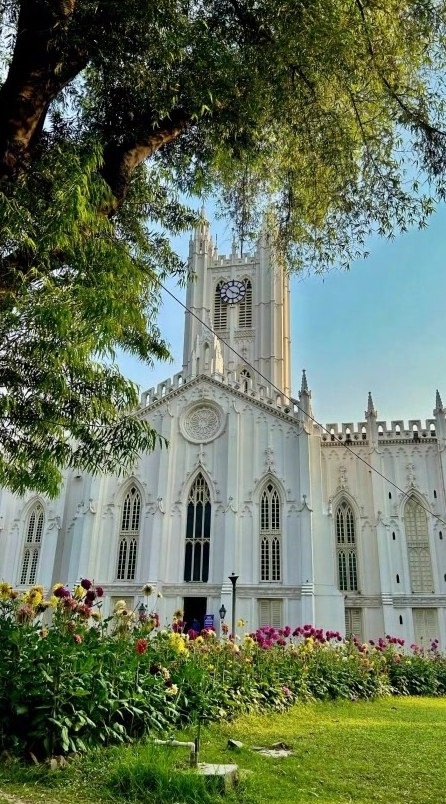
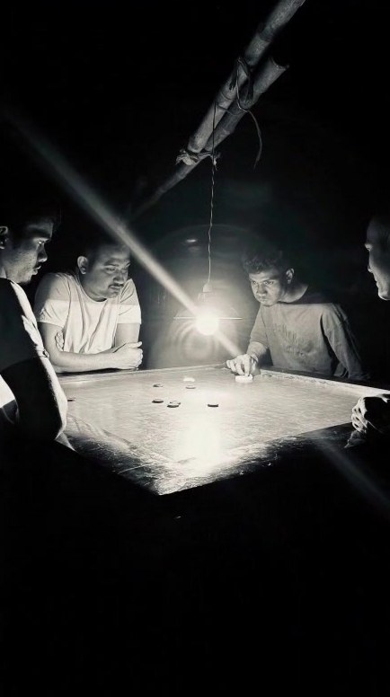
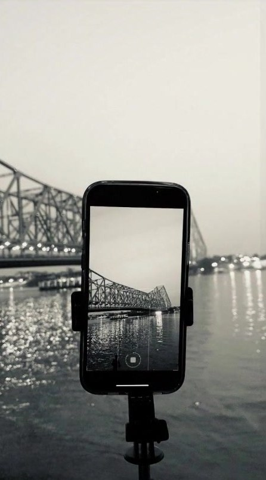
Available for freelance & collaborations